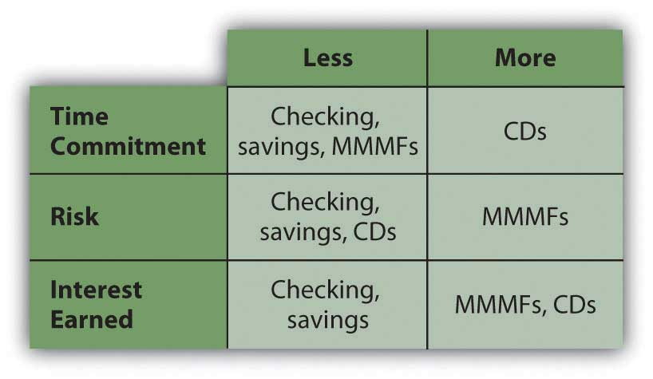
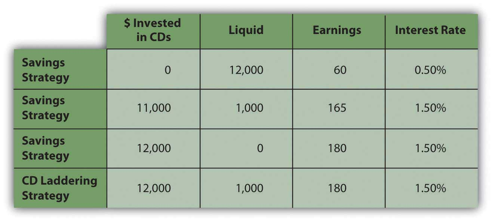

When incomes are larger than expenses, there is a budget surplus, and that surplus can be saved. You could keep it in your possession and store it for future use, but then you have the burden of protecting it from theft or damage. More important, you create an opportunity cost. Because money trades in markets and liquidity has value, your alternative is to lend that liquidity to someone who wants it more than you do at the moment and is willing to pay for its use. Money sitting idle is an opportunity cost.
The price that you can get for your money has to do with supply and demand for liquidity in the market, which in turn has to do with a host of other macroeconomic factors. It also has a lot to do with time, opportunity cost, and risk. If you are willing to lend your liquidity for a long time, then the borrower has more possible uses for it, and increased mobility increases its value. However, while the borrower has more opportunity, you (the seller) have more opportunity cost because you give up more choices over a longer period of time. That also creates more risk for you, since more can happen over a longer period of time. The longer you lend your liquidity, the more compensation you need for your increased opportunity cost and risk.
The markets for liquidity are referred to as the money marketsA market where short-term liquidity is traded. and the capital marketsA market where long-term liquidity is traded.. The money markets are used for relatively short-term, low-risk trading of money, whereas the capital markets are used for relatively long-term, higher-risk trading of money. The different time horizons and risk tolerances of the buyers, and especially the sellers, in each market create different ways of trading or packaging liquidity.
When individuals are saving or investing for a long-term goal (e.g., education or retirement) they are more likely to use the capital markets; their longer time horizon allows for greater use of risk to earn return. Saving to finance consumption relies more on trading liquidity in the money markets, because there is usually a shorter horizon for the use of the money. Also, most individuals are less willing to assume opportunity costs and risks when it comes to consumption, thus limiting the time that they are willing to lend liquidity.
When you save, you are the seller or lender of liquidity. When you use someone else’s money or when you borrow, you are the buyer of liquidity.
For most individuals, access to the money markets is done through a bank. A bank functions as an intermediaryA third party that facilitates trade between two parties. In financial services, a bank is an intermediary between lenders and borrowers. or “middleman” between the individual lender of money (the saver) and the individual borrower of money.
For the saver or lender, the bank can offer the convenience of finding and screening the borrowers, and of managing the loan repayments. Most important, a bank can guarantee the lender a return: the bank assumes the risk of lending. For the borrowers, the bank can create a steady supply of surplus money for loans (from the lenders), and arrange standard loan terms for the borrowers.
Banks create other advantages for both lenders and borrowers. Intermediation allows for the amounts loaned or borrowed to be flexible and for the maturity of the loans to vary. That is, you don’t have to lend exactly the amount someone wants to borrow for exactly the time she or he wants to borrow it. The bank can “disconnect” the lender and borrower, creating that flexibility. By having many lenders and many borrowers, the bank diversifies the supply of and demand for money, and thus lowers the overall risk in the money market.
The bank can also develop expertise in screening borrowers to minimize risk and in managing and collecting the loan payments. In turn, that reduced risk allows the bank to attract lenders and diversify supply. Through diversification and expertise, banks ultimately lower the cost of lending and borrowing liquidity. Since they create value in the market (by lowering costs), banks remain as intermediaries or middlemen in the money markets.
There are different kinds of banks based on what kind of brokering of money the bank does. Those differences have become less distinct as the banking industry consolidates and strives to offer more universal services. In the last generation, decreasing bank regulation, increasing globalization, and technology have all contributed to that trend. Different kinds of banks are listed below.
Retail banks are commonly known as thrift institutions, savings banks, savings and loan associations, or mutual savings banks and are usually private or public corporations. Credit unionsA retail banking institution that is either depositor- or member-owned. Membership is usually defined and limited to affiliation with a particular group—for example, state or union employees, or a religious or social affiliation. function similarly, but are cooperative membership organizations, with depositors as members.
In addition to banks, other kinds of intermediaries for savers include pension funds, life insurance companies, and investment funds. They focus on saving for a particular long-term goal. To finance consumption, however, most individuals primarily use banks.
Some intermediaries have moved away from the “bricks-and-mortar” branch model and now operate as online banks, either entirely or in part. There are cost advantages for the bank if it can use online technologies in processing saving and lending. Those cost savings can be passed along to savers in the form of higher returns on savings accounts or lower service fees. Most banks offer online and, increasingly, mobile account access, via cell phone or smartphone. Intermediaries operating as finance companies offer similar services.
Because their role as intermediaries is critical to the flow of funds, banks are regulated by federal and state governments. Since the bank failures of the Great Depression, bank deposits are federally insured (up to $250,000) through the FDIC (Federal Deposit Insurance Corporation). Since the financial crisis of 2007–2009, bank money market funds also are insured. Credit union accounts are similarly insured by the National Credit Union Agency or NCUA, also an independent federal agency. In choosing an intermediary, savers should make sure that accounts are FDIC or NCUA insured.
Banks offer many different ways to save your money until you use it for consumption. The primary difference among the accounts offered to you is the price that your liquidity earns, or the compensation for your opportunity cost and risk, which in turn depends on the degree of liquidity that you are willing to give up. You give up more liquidity when you agree to commit to a minimum time or amount of money to save or lend.
For the saver, a demand depositAccounts from which withdrawals may be made “on demand,” such as a checking account. (e.g., checking account) typically earns no or very low interest but allows complete liquidity on demand. Checking accounts that do not earn interest are less useful for savings and therefore more useful for cash management. Some checking accounts do earn some interest, but often require a minimum balance. Time depositsAn account from which withdrawals are made over time, or funds that are deposited for a time., or savings accounts, offer minimal interest or a bit more interest with minimum deposit requirements.
If you are willing to give up more liquidity, certificates of deposit (CDs)A savings instrument requiring a minimum sacrifice of liquidity, either as a minimum deposit amount or a minimum time deposited, in exchange for a higher rate of earnings. offer a higher price for liquidity but extract a time commitment enforced by a penalty for early withdrawal. They are offered for different maturities, which are typically from six months to five years, and some have minimum deposits as well. Banks also can offer investments in money market mutual funds (MMMFs)A savings instrument invested in the money markets., which offer a higher price for liquidity because your money is put to use in slightly higher-risk investments, such as Treasury bills (short-term government debt) and commercial paper (short-term corporate debt).
Compared to the capital markets, the money markets have very little risk, so MMMFs are considered very low-risk investments. The trade-offs between liquidity and return are seen in Figure 7.3 "Savings Products versus Liquidity and Risk".
Figure 7.3 Savings Products versus Liquidity and Risk
As long as your money remains in your account, including any interest earned while it is there, you earn interest on that money. If you do not withdraw the interest from your account, it is added to your principal balance, and you earn interest on both. This is referred to as earning interest on interest, or compounding. The rate at which your principal compounds is the annual percentage rate (APR)The annual rate of interest on credit or debt. that your account earns.
You can calculate the eventual value of your account by using the relationships of time and value that we looked at in Chapter 4 "Evaluating Choices: Time, Risk, and Value"—that is,
where FV = future value, PV = present value, r = rate, and t = time. The balance in your account today is your present value, PV; the APR is your rate of compounding, r; the time until you will withdraw your funds is t. Your future value depends on the rate at which you can earn a return or the rate of compounding for your present account.
If you are depositing a certain amount each month or with each paycheck, that stream of cash flows is an annuity. You can use the annuity relationships discussed in Chapter 4 "Evaluating Choices: Time, Risk, and Value" to project how much the account will be worth at any point in time, given the rate at which it compounds. Many financial calculators—both online and handheld—can help you make those calculations.
Ideally, you would choose a bank’s savings instrument that offers the highest APR and most frequent compounding. However, interest rates change, and banks with savings plans that offer higher yields often require a minimum deposit, minimum balance, and/or a maintenance fee. Also, your interest from savings is taxable, as it is considered income. As you can imagine, however, with monthly automatic deposits into a savings account with compounding interest, you can see your wealth can grow safely.
Your choice of savings instrument should reflect your liquidity needs. In the money markets, all such instruments are relatively low risk, so return will be determined by opportunity cost.
You do not want to give up too much liquidity and then risk being caught short, because then you will have to become a borrower to make up that shortfall, which will create additional costs. If you cannot predict your liquidity needs or you know they are immediate, you should choose products that will least restrict your liquidity choices. If your liquidity needs are more predictable or longer term, you can give up liquidity without creating unnecessary risk and can therefore take advantage of products, such as CDs, that will pay a higher price.
Your expectations of interest rates will contribute to your decision to give up liquidity. If you expect interest rates to rise, you will want to invest in shorter-term maturities, so as to regain your liquidity in time to reinvest at higher rates. If you expect interest rates to fall, you would want to invest in longer-term maturities so as to maximize your earnings for as long as possible before having to reinvest at lower rates.
One strategy to maximize liquidity is to diversify your savings in a series of instruments with differing maturities. If you are using CDs, the strategy is called “CD laddering.” For example, suppose you have $12,000 in savings earning 0.50 percent annually. You have no immediate liquidity needs but would like to keep $1,000 easily available for emergencies. If a one-year CD is offering a 1.5 percent return, the more savings you put into the CD, the more return you will earn, but the less liquidity you will have.
A “laddering” strategy allows you to maximize return and liquidity by investing $1,000 per month by buying a one-year CD. After twelve months, all your savings is invested in twelve CDs, each earning 1.5 percent. But because one CD matures each month, you have $1,000 worth of liquidity each month. You can keep the strategy going by reinvesting each CD as it matures. Your choices are shown in Figure 7.4 "CD Laddering Strategy".
Figure 7.4 CD Laddering Strategy
A laddering strategy can also reflect expectations of interest rates. If you believe that interest rates or the earnings on your money will increase, then you don’t want to commit to the currently offered rates for too long. Your laddering strategy may involve a series of relatively short-term (less than one year) instruments. On the other hand, if you expect interest rates to fall, you would want to weight your laddering strategy to longer-term CDs, keeping only your minimum liquidity requirement in the shorter-term CDs.
The laddering strategy is an example of how diversifying maturities can maximize both earnings and liquidity. In order to save at all, however, you have to choose to save income that could otherwise be spent, suffering the opportunity cost of everything that you could have had instead. Saving is delayed spending, often seen as a process of self-denial.
One saving strategy is to create regular deposits into a separate account such that you might have a checking account from which you pay living expenses and a savings account in which you save.
This is easier with direct deposit of wages, since you can have a portion of your disposable income go directly into your savings account. Saving becomes effortless, while spending actually requires a more conscious effort.
Some savings accounts need to be “segregated” because of different tax consequences—a retirement or education account, for example. In most cases, however, separating accounts by their intended use has no real financial value, although it can create a psychological benefit. Establishing a savings vehicle has a very low cost, if any, so it is easy to establish as many separate funds for saving as you find useful.
Consumers use retail institutions, including the following:
Savings instruments include the following: